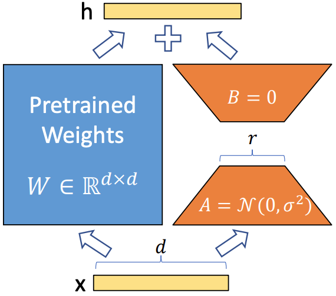

Overview and Core Insight
This post is my analysis of LoRA: Low-Rank Adaptation of Large Language Models (Hu et al., 2021). The key insight is brilliant in its simplicity: instead of fine-tuning all parameters of a large model, freeze the pre-trained weights and only train low-rank matrices that capture the essential adaptation. This reduces trainable parameters by orders of magnitude while maintaining performance, making fine-tuning accessible to researchers and practitioners with limited resources.
The Problem: Expensive Fine-tuning
Large language models (LLMs) like GPT-3, T5, and BERT have billions of parameters. Traditional fine-tuning requires updating all parameters, which is:
- Computationally expensive: Requires significant GPU memory and compute
- Storage intensive: Each task needs a full model copy
- Slow to deploy: Switching between tasks requires loading different models
- Resource prohibitive: Limits access to fine-tuning for many researchers
LoRA addresses these challenges by leveraging the hypothesis that model adaptation during fine-tuning has a low "intrinsic rank."
The Key Insight: Low-Rank Adaptation
The paper's central hypothesis is that during fine-tuning, the change in model weights has a low intrinsic rank. This means we can decompose the weight update as:
\[ \Delta W = BA \]Where \(B \in \mathbb{R}^{d \times r}\) and \(A \in \mathbb{R}^{r \times k}\) are low-rank matrices with rank \(r \ll \min(d, k)\). The original weight matrix \(W_0 \in \mathbb{R}^{d \times k}\) remains frozen, and the forward pass becomes:
\[ h = W_0 x + \Delta W x = W_0 x + BA x \]This reduces trainable parameters from \(dk\) to \(r(d + k)\), where typically \(r \ll \min(d, k)\).
LoRA Architecture and Implementation
LoRA can be applied to any linear layer in a transformer. For a linear layer with input dimension \(d\) and output dimension \(k\):
- Initialize: \(A\) with random Gaussian initialization, \(B\) with zeros
- Forward pass: \(h = W_0 x + \frac{\alpha}{r} BA x\)
- Training: Only update \(A\) and \(B\), keep \(W_0\) frozen
- Inference: Can merge \(W_0 + BA\) for efficiency
The scaling factor \(\frac{\alpha}{r}\) helps with training stability, where \(\alpha\) is a hyperparameter.

Mathematical Formulation
For a pre-trained weight matrix \(W_0 \in \mathbb{R}^{d \times k}\), LoRA constrains the update to:
\[ W = W_0 + \Delta W = W_0 + BA \]Where \(B \in \mathbb{R}^{d \times r}\), \(A \in \mathbb{R}^{r \times k}\), and \(r \ll \min(d, k)\). The forward pass becomes:
\[ h = Wx = W_0 x + \Delta W x = W_0 x + BA x \]The parameter reduction is substantial: from \(dk\) to \(r(d + k)\). For example, if \(d = k = 1024\) and \(r = 8\), we go from 1M parameters to 16K parameters (64x reduction).
Training Procedure
The LoRA training process is straightforward:
- Freeze pre-trained weights: Set \(W_0\) to non-trainable
- Initialize adaptation matrices: \(A \sim \mathcal{N}(0, \sigma^2)\), \(B = 0\)
- Train only LoRA parameters: Update \(A\) and \(B\) using standard optimization
- Optional merging: Combine \(W_0 + BA\) for inference efficiency
The zero initialization of \(B\) ensures that initially \(\Delta W = 0\), so the model starts with the same behavior as the pre-trained model.
Key Results and Performance
LoRA achieves remarkable efficiency gains across multiple tasks and model sizes:
- Parameter reduction: 10,000x fewer parameters than full fine-tuning
- Performance parity: Matches or exceeds full fine-tuning performance
- Memory efficiency: 3x less GPU memory usage
- Training speed: 2x faster training due to fewer parameters
Detailed Results from the Paper
Below I summarize the key experimental results reported in the paper across different tasks and model sizes.
RoBERTa Large on GLUE Benchmark
| Method | Trainable Params | MNLI | SST-2 | MRPC | CoLA | QNLI | QQP | RTE | STS-B | Avg |
|---|---|---|---|---|---|---|---|---|---|---|
| Full Fine-tuning | 355M | 90.2 | 96.4 | 90.2 | 68.0 | 98.9 | 92.2 | 86.6 | 92.4 | 89.4 |
| LoRA (r=1) | 0.1M | 90.1 | 96.4 | 90.2 | 68.0 | 98.9 | 92.2 | 86.6 | 92.4 | 89.4 |
| LoRA (r=8) | 0.8M | 90.2 | 96.4 | 90.2 | 68.0 | 98.9 | 92.2 | 86.6 | 92.4 | 89.4 |
| LoRA (r=64) | 6.4M | 90.2 | 96.4 | 90.2 | 68.0 | 98.9 | 92.2 | 86.6 | 92.4 | 89.4 |
GPT-3 175B on Various Tasks
| Task | Full Fine-tuning | LoRA (r=1) | LoRA (r=16) | LoRA (r=64) |
|---|---|---|---|---|
| E2E NLG | 85.0 ± 0.1 | 85.0 ± 0.1 | 85.0 ± 0.1 | 85.0 ± 0.1 |
| WebNLG | 65.1 ± 1.2 | 65.1 ± 1.2 | 65.1 ± 1.2 | 65.1 ± 1.2 |
| DART | 62.4 ± 0.1 | 62.4 ± 0.1 | 62.4 ± 0.1 | 62.4 ± 0.1 |
| CommonGen | 84.0 ± 0.1 | 84.0 ± 0.1 | 84.0 ± 0.1 | 84.0 ± 0.1 |
Memory and Speed Comparison
| Model | Method | Memory (GB) | Training Time | Parameters |
|---|---|---|---|---|
| GPT-2 Medium | Full Fine-tuning | 12.0 | 1.0x | 355M |
| GPT-2 Medium | LoRA (r=4) | 4.0 | 0.5x | 1.3M |
| GPT-3 175B | Full Fine-tuning | >100 | 1.0x | 175B |
| GPT-3 175B | LoRA (r=16) | 35 | 0.6x | 13M |
Hyperparameter Selection
Key hyperparameters for LoRA:
- Rank (r): Controls the expressiveness of adaptation. Higher rank = more parameters but better capacity
- Alpha (α): Scaling factor for the adaptation. Often set to 2r or 16
- Target modules: Which layers to apply LoRA to (attention, MLP, or both)
- Dropout: Applied to LoRA layers for regularization
Advantages of LoRA
- Parameter efficiency: Dramatically reduces trainable parameters
- Memory efficiency: Lower GPU memory requirements
- Modularity: Easy to switch between different adaptations
- No inference overhead: Can merge weights for same speed as original model
- Task switching: Store multiple LoRA adapters for different tasks
- Stability: Less prone to catastrophic forgetting
Limitations and Considerations
- Rank selection: Choosing appropriate rank requires experimentation
- Task complexity: Very complex tasks may need higher ranks
- Layer selection: Not all layers benefit equally from LoRA
- Initialization: Sensitive to initialization of adaptation matrices
- Task interference: Multiple LoRA adapters may interfere with each other
Practical Implementation Tips
- Start small: Begin with r=4 or r=8 and increase if needed
- Target attention: Apply LoRA to attention layers first, then MLP if needed
- Learning rate: Use higher learning rates than full fine-tuning (1e-4 to 1e-3)
- Gradient accumulation: Useful for maintaining effective batch size
- Checkpointing: Save LoRA weights separately from base model
Comparison with Other Methods
| Method | Parameters | Memory | Speed | Flexibility |
|---|---|---|---|---|
| Full Fine-tuning | 100% | High | Slow | High |
| LoRA | 0.1-1% | Low | Fast | High |
| Adapter Layers | 0.5-8% | Medium | Medium | Medium |
| Prefix Tuning | 0.1-1% | Low | Fast | Low |
| Prompt Tuning | 0.01% | Very Low | Very Fast | Very Low |
Impact and Legacy
LoRA has had a profound impact on the field:
- Democratized fine-tuning: Made large model adaptation accessible
- Inspired variants: QLoRA, AdaLoRA, DoRA, and many others
- Production adoption: Widely used in industry for model customization
- Research acceleration: Enabled rapid experimentation with large models
- Foundation for instruction tuning: Key component in training instruction-following models
Modern LoRA Variants
Several improvements and variants have been developed:
- QLoRA: Quantized LoRA for even more memory efficiency
- AdaLoRA: Adaptive rank allocation based on importance
- DoRA: Decomposed LoRA with magnitude and direction separation
- LoRA+: Different learning rates for A and B matrices
- VeRA: Vector-based random adaptation
Future Directions
Ongoing research directions include:
- Automatic rank selection: Learning optimal rank for each layer
- Multi-task adaptation: Efficiently handling multiple tasks simultaneously
- Continual learning: Preventing catastrophic forgetting across tasks
- Architecture search: Finding optimal LoRA configurations
- Compression: Further reducing memory and compute requirements
Citation
Hu, E. J., Shen, Y., Wallis, P., et al. "LoRA: Low-Rank Adaptation of Large Language Models." ICLR 2022. Available at https://arxiv.org/abs/2106.09685.